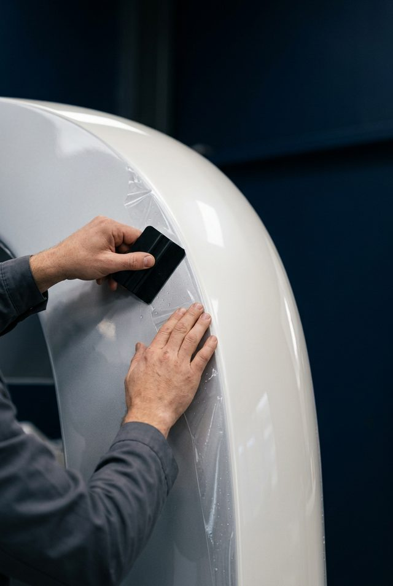
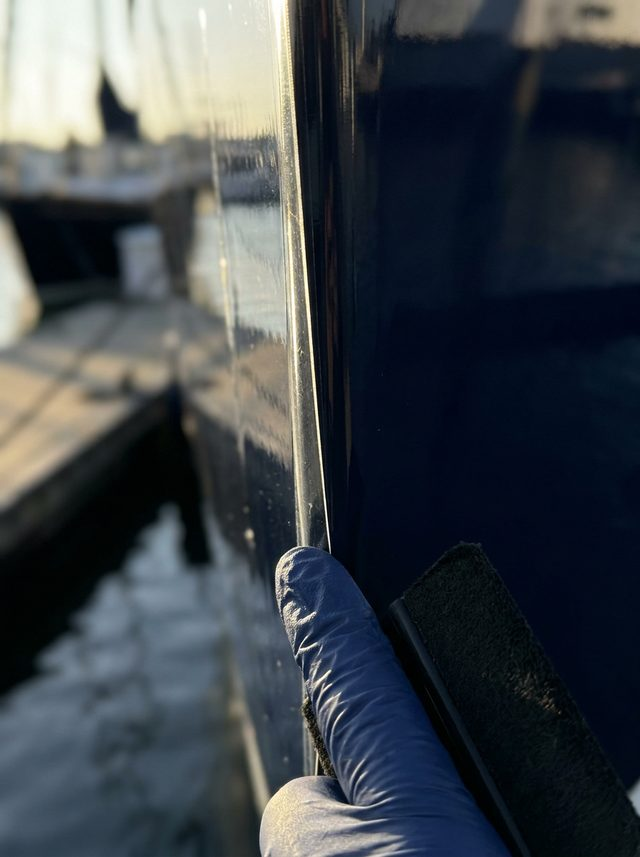

Marine PPF
Marine paint protection film.
A 10-mil self-healing urethane film that takes the hits — impact, abrasion, dock rash and UV — for 36–60 months. The highest level of surface protection we offer.

What it is
Engineered protection, not a quick shine.
Paint protection film is a thick, optically clear urethane layer applied to high-wear and high-value surfaces. Our 10-mil marine film is self-healing — light swirls fade with heat and sun — and engineered to resist staining and yellowing in the marine environment.
Where ceramic is a thin, hard coating, PPF is a physical barrier. Many vessels use both: film on the surfaces that take impact, ceramic across the rest for gloss and hydrophobics.

How it works
The process.
Inspect & measure
We identify the high-wear zones worth protecting and assess the surface beneath.
Correct the surface
Any correction happens first — film should go over a sound, clean finish.
Pattern & cut
Film is precision-patterned to each zone for clean lines and full coverage.
Apply & tuck
Installed and tucked at the edges for a sealed, near-invisible finish.
Heat-set & inspect
Heat-set, then inspected under light for clarity and adhesion.
What's included
In every marine ppf engagement.
A clear scope, a marine-grade standard, and honest expectations set at inspection.
- Surface inspection & zone planning
- Correction prep where required
- 10-mil self-healing marine film
- Precision-fit application to selected zones
- Sealed, tucked edges
- Care & maintenance guidance
Lifespan & expectations
What to expect.
We quote 36–60 months for 10-mil marine PPF, depending on exposure and care. It is the most robust surface protection we install — and we will tell you exactly where it is worth it.
Who it's for
Condition fit.
Impact & abrasion zones
Bow, rub-rails, swim platforms, transom and other surfaces that take dock and wake punishment.
Charter & resale focus
High-use vessels and owners protecting long-term resale value.
Sound gelcoat or paint
Film goes over a corrected, sound surface — we assess this first.
Questions
Marine PPF FAQ.
They solve different problems. PPF is a thick physical barrier for impact and abrasion; ceramic is a thin, hard layer for gloss and hydrophobics. Many vessels use both. We map the right combination at inspection.
Quality 10-mil marine film is engineered to resist UV yellowing. We quote a 36–60 month lifespan and set honest expectations for your exposure and use.
Light surface swirls and marks fade as the film is warmed by sun or heat. Deep cuts and gouges do not self-heal — no film makes a surface indestructible.
Usually the high-wear zones where film earns its place, though fuller coverage is possible. We recommend only what genuinely protects the vessel.
Book an inspection
Start with an inspection.
Free and consultative. We read your vessel's surface, grade the oxidation, and recommend the right layer — no pressure.